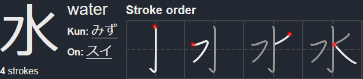

Kanji - 漢字
O último e mais notório aspeto da língua escrita japonesa é o Kanji. A maior parte das palavras em japonês são escritas em Kanji, embora continuem a ser pronunciadas com os sons fonéticos representados por Hiragana e Katakana.
Ordem de escrita - 書き順
Quando se aprende um kanji, é muito importante aprendê-lo com a ordem e direção corretas dos traços desde o início, para evitar desenvolver maus hábitos.
Eu próprio pensava que não era importante desde que no fim tenha o mesmo aspeto. No entanto, existem milhares de caracteres que nem sempre são escritos da mesma maneira que são impressos ou mostrados em ecrãs (computador ou telemóvel).
A ordem correta dos traços ajuda a garantir que os caracteres são reconhecíveis, mesmo quando se escrevem rapidamente ou se utilizam estilos mais cursivos.
Joyou Kanji - 常用漢字
Não se sabe ao certo quantos kanjis existem. No entanto, podemos usar a lista de Kanjis para Uso Quotidiano - 常用漢字, que é uma lista definida pelo Ministério de Educação do Japão (atualmente incluí 2136 entradas) para estudar.
Como existem 2136 kanjis, não podemos estudar da mesma maneira que fizemos com Hiragana e Katakana. Memorizar individualmente mais de 2000 caracteres, que podem ter não uma, nem duas mas até três ou mais leituras, não é viável.
On'Yomi e Kun'Yomi - 音読みと訓読み
Como alguns podem saber, o Kanji originou na China, e ao ser importado para o Japão, muitos deles levaram consigo as suas leituras. Muitos deles ganharam ainda leituras extra. A leitura original (Chinesa) chama-se On'Yomi - 音読み, a leitura japonesa chama-se Kun'Yomi - 訓読み.
Vamos analisar o kanji 水, que significa: água.

Podemos ver que 水 tem 1 Kun'Yomi e 1 On'Yomi. Apesar de parecer fácil memorizar duas leituras, não ajudará em muito, ainda mais considerando que existem mais de 2000 kanjis usados no dia-dia. Recomendo aprender vocabulário e á medida que encontramos Kanji que não conhecemos, pesquisamos o mesmo. Existem vários websites/dicionários online, mas pessoalmente gosto do Jisho.
Como aprender Kanji - 漢字の勉強方法
Usando 水 como exemplo, vamos ver algumas palavras que usam o mesmo:
- 水「みず」 água
- 水曜日「すいようび」 quarta-feira
- 水泳「すいえい」 natação
Geralmente, Kun'yomi é usado quando o kanji está isolado, como em 水, e On'yomi é usado quando 2 ou mais kanjis se juntam para formar uma palavra, como em 水泳 ou 水曜日.
Por fim, quero recomendar mais uma vez o Jisho e também a extensão 10ten, que mostra a leitura de um kanji/palavra ao colocarmos o rato por cima do mesmo (Versão Firefox,Versão Chrome)